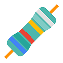

Welcome to Resistor
Choose what to put behind a pause
Resistor does not read your browsing. It only ever sees the sites you pick here — and Chrome will ask you to confirm them in the next step.
Welcome back. Your old blocklist carried over. This version asks for permission per site instead of for every website you visit, so please confirm the sites you actually want blocked below.
Common time sinks
Tick the ones that pull you in. You can change all of this later.
You are set up.
Try opening one of your blocked sites — you will land on a pause page instead. Fine-tune difficulty, schedules and daily limits in settings.